Design of Experiment in R 👨💻
Post Graduate Students, CPEB Club, University of Ibadan
Saturday, August 26, 2023
Outline
Basic ideas
Definition of basic concepts
Principles of good experimental design
Field experimental design
Definition of basic terms
Experiment: an investigation in which a researcher applies some treatments to experimental units and then observes its effect by measuring one or more response variables
Treatment: This is any measure or procedure whose effects are to be measured and perhaps compared with others.
Experimental material: Any element of an environment on which treatments are applied and observation made.
Definition of basic terms Cont.
Experimental Plot: This is the unit of experimental material receiving only one application of a treatment.
Sampling Unit: This is that portion of the experimental unit taken for analysis and subsequently used for decision making.
Experimental Error: This refers to the variation among experimental units receiving the same treatment.
Layout – the physical arrangement of experimental units in space
Block - group of homogeneous experimental unit
Experimental Design
The term experimental design refers to a set of experiments that are prepared in advance of their execution
There are many types of experimental designs CRD, RCBD, IBD, etc.
In experimental design it is important to identify the sources of variation
Purpose of experimental design
Determine cause of variation in measured responses
Identifying the variables that cause a maximum or minimal response
Compare response between controlled variables
Minimize the effect of experimental error
Model future response values
Key Concept in Design of Experiment
Replicate: Two or more experiments using different experimental units, but with the same factor or independent variable settings. NB: Due to changes in
Randomization: Is the process of randomly assigning treatments to experimental units. As a result of the random process, every treatment factors has the same probability
Blocking: Is the procedure for gathering similar experimental units into a relatively homogeneous group.
Why blocking?
Removes extraneous variation from data
Serves as an error control strategy
Enhances precision in inferential data analysis
- Block what you can and randomize what you cannot.” Box, Hunter and Hunter 1978
Completely Randomized Design (CRD)
CRD is best suited for experiments with a small number of treatments
It is used when experimental units are essentially homogeneous
CRD is generally applicable to the lab experimental conditions
Because of homogeneity requirement, it may be difficult to use this design for field experiments
Principles of replication and randomization apply but not “local-control”
Condition for use
It is used where and when experimental materials are homogeneous
And when the only source of variability apart from experimental error, is the treatment applied.
Randomized Complete Block Design (RCBD)
Probably the most used experimental design in agricultural field trial
Each treatment replicated once in each block (balanced and complete)
The block of experimental units should be as uniform as possible
The randomization process for RCBD is applied separately to each block (Gomez and Gomez, 1984)
The design is based on three principles of experimental design
Example and layout of RCBD
- A field experiment was carried out to evaluate and compare yield performances of four new varieties of cassava (B, C, D and E) with a standard check variety A. The trial was laid out in 3 randomized blocks.
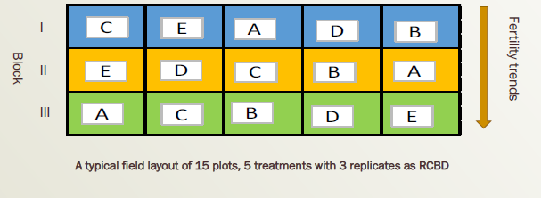
Statistical Model for RCBD
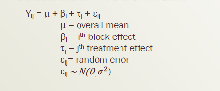
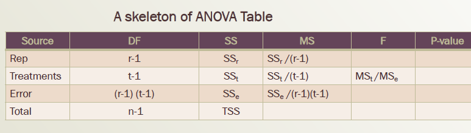
Factorial experiment
Research problem
An experimenter wants to know (i) the best among the three newly developed varieties (V1, V2, and V3) of a crop (ii) the best among the dose of nitrogen fertilizer (N1, N2, N3, and N4) for the best yield of the same crop and (iii) also wants to know which variety among the three varieties under which dose of nitrogen provides the best yield.
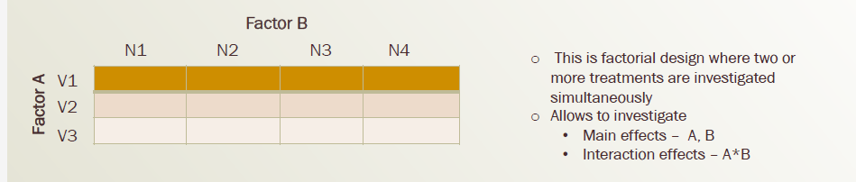
Example and layout of factorial experiment
A study is to investigate the response of one variety to three levels of a new plant growth regulator (PGR) denoted by P1, P2, P3 and four levels of nitrogen fertilizer (N1, N2, N3, and N4). This is a 3 x 4 factorial experiment. A randomized block design with three replicates was adopted and the treatment combination were randomly assigned to the plots within each block.
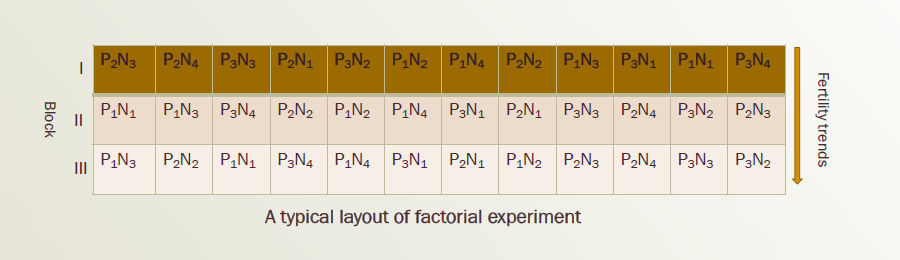
Statistical model Factorial experiment
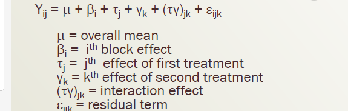
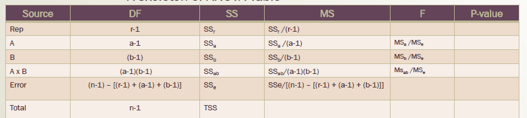
Split plot design (SPD)
Design developed by Ronald Fisher (1925) for use in agricultural experiments
It is a factorial design with restricted randomization of the treatment combinations within each block
Two levels of experimental units
- Main plot units
- Sub plot units
Randomization is a two-stage process
The are two random errors
- main-plot factor error
- sub-plot factor error
Split plot design (SPD) Cont.
- Consider a study of the effects of two irrigation methods (factor A
– A1 and A2) and two fertilizers (factor B – B1 and B2) on yield of a crop using three randomized block design
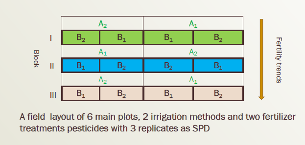
Example and layout of SPD
An experiment was implemented to find the effect of spraying pesticide (A1, A2, and A3) to control cassava green mite pest on the yield of four varieties of cassava (V1, V2, V3, and V4) . The field design was a split plot in three randomized blocks (replicates)
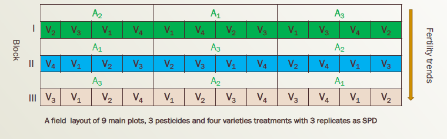
Statistical Model of Split Plot
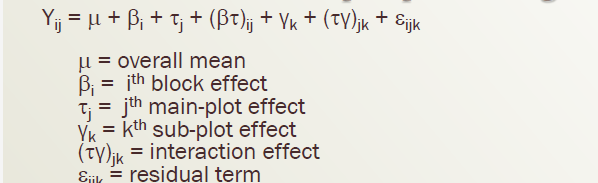
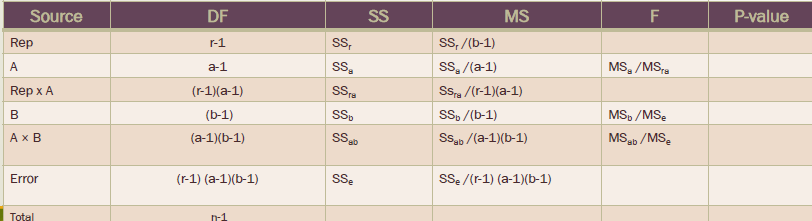
Incomplete block design
An appropriate design for evaluating large number of treatment
Useful when heterogeneity is great within block
It gives greater precision than RCBD
An incomplete-block design is resolvable - the blocks are grouped into larger blocks and the large blocks form a complete-block design
Incomplete block design (cont’d)
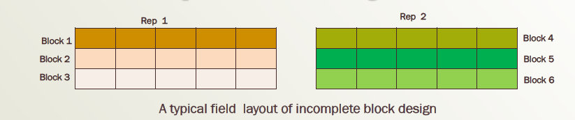
Parameters/notations used in IBD - s = Number of blocks in each complete replicate - k = Number of units per block (block size) - r = Number of replicates of each treatment - t = Number of treatments = sk - b = total number of blocks in an experiment = sr
Square Lattice design
- For this design, number of treatments must be perfect square
t = k2 e.g. 25, 36, 49, 81, 100, etc
The block size (k) is the square root of the number of treatments (k = t½ )
Number of blocks in each replicate = number of units per block (s= k)
The number of replication (r) is one more than the block size (r = k + 1)
The restriction on the number of treatment and block design has been overcome by the introduction of alpha lattice
Type of Lattice Design (cont’d)
Rectangular Lattice design
The number of treatments is t = s*(s-1) and k = s – 1
Example 6 x 5 rectangular lattice: has 6 blocks per complete replicate, block size of 5, and 30 treatments
Number of replicates r is 2 < r < s Alpha lattice
The number of treatments is t = s*k
Flexible in a choice of s and k
The only restriction is that block size must be a factor of number of treatment
Example and layout of Alpha-Lattice Design
A field experiment was carried out to evaluate and compare yield performances of 24 varieties of cassava (V1, V2, …, V24). The trial was laid out in four randomized incomplete blocks in two larger blocks.
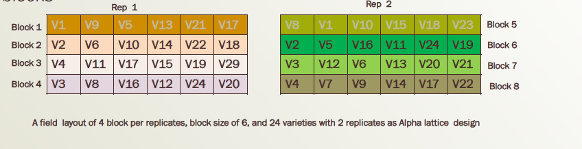
Statistical model Alpha lattice Design
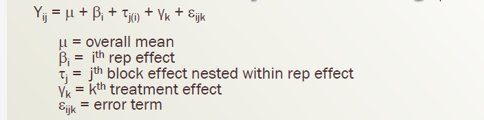
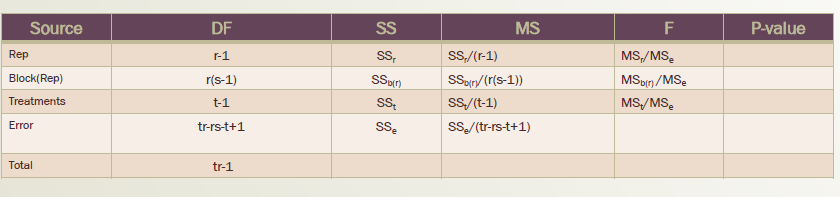